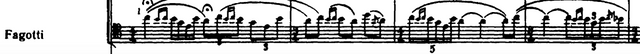
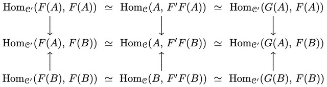

My name is Nan An. I like mathematics, physics, and atonality music. I also enjoy walking and jogging.
I am interested in mathematical physics like AQFT, TQFT.
There will be updates when I finished applying gradschools.
Thank you.
Solutions to Folland's Real Analysis - https://github.com/annp0/folland-real-analysis-exercises
Introduction to Galois theory - https://github.com/annp0/intro-to-galois-theory
In progress: a note regarding complex manifolds
Nov 2003: born in Weifang, Shandong Province, PRC (山东省潍坊市)
Sep 2016 - Jun 2019: Shouguang No.1 High School (寿光市第一中学)
Sep 2019 - Present: Shanghaitech University (上海科技大学)
My email: annan at shanghaitech.edu.cn
Github: https://github.com/annp0/
Telegram: https://t.me/ariaacht
Updated Nov 18, 2022 [0]
